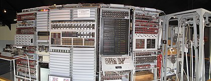
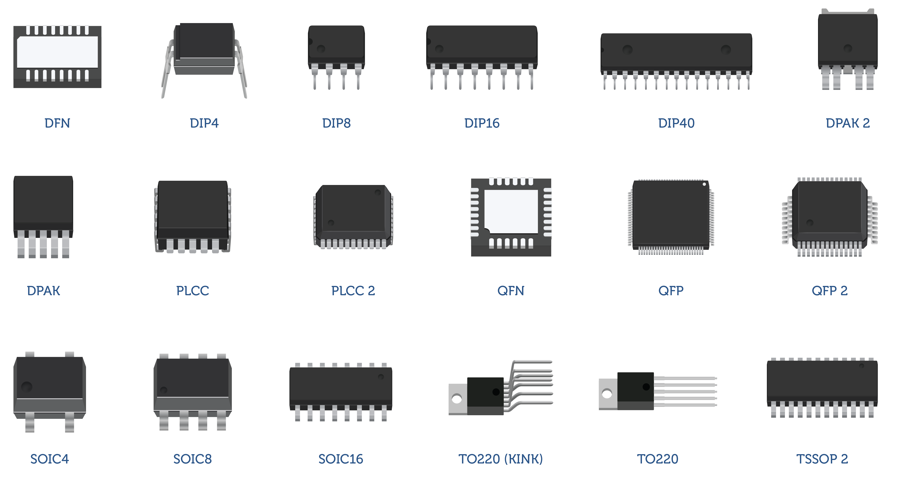

Blog sobre tags básicas
Indice
Breve História dos computadores
1º gereção
Harvard Mark I (1944)

Mark 1 foi um computador eletro mecanico baseado em valvulas e processos mecânicos para realização de
calculos. Apesar de ser considerado o primeiro computador construído, sabemos que já existiam "computadores" anteriormente.
Colossus (1946)

Colossus foi desenvolvido para realizar cripto-análises pelos desenvolvedores
alemãos durante a grande gerra mundial.
ENIAC (1946)

O ENIAC também foi criado para fins de análises durante
a 1º guerra mundial pelos estados unidos. Este sendo mais automático
em relação ao Mark 1. Nesta época foi "criado" o termo bug
devido a quebra dos equipamentos pelos insetos atraídos pelo calor das valvulas e relês.
2º geração (1959 à 1965)
Criação dos transistores

Com a criação dos transistores o tamanho dos computadores
passou a ser reduzido, deixando mais portateis.
3º geração (1965 a 1970)
Circuitos integrados
- Transistor
- Capacitores
- Resistores

Nesta geração foram criados os circuitos integrados, que por sua vez atenderam a demanda de alta
produtividade e tamanhos menores, delegando funções dentro da placa lógica/elétrica
para pequenas partes de circuito. Neste periodo, assim como a geração anterior,
os computadores passaram a ter tamanhos menores.
4º geração (1971 até os dias atuais)
Criação de desktos, notebooks, smartphones, smartwatch

Esta geração foi possível através da evolução da geração passada
onde os computadores chegaram a tamanhos adequados para os usuários casuais (personal computer)
. Com essa evolução constante, passamos a ter computadores até mesmo em nossos bolsos e ao que tudo indica
a próxima geração será da IoT (Internet das coisas) e da evolução das IA's (Inteligência artificial)
Voltar
O Surgimento da internet (breve história)
Em paralelo com a evolução dos computadores também a comunicação evoluiu.
A comunicação para a sociedade sempre foi um tema importante e a evolução para\
a comunicação de grandes distâncias foi o primeiro passo para o que conhecemos hoje como Word Wide Web
Iniciamos essa breve história com o advendo do telégrafo, que foi a primeira forma de comunicação a distância que utilizava
o código morse. Em 1958 foi feito o mega-cabiamento intercontinental podendo ser feito a comunicação
em uma grande distância.
Na década de 1950 ocorreu o que conhecemos como guerra fria, neste periodo
houve uma grande corrida tecnológica entre as duas grandes potências que estavam em conflito velado
(Estados Unidos e Russia). Com isso os EUA criaram a organização DARPA (Defense Advanced Research Projects Agency)
para desenvolver projetos de tecnologia de defesa do território (defesa anti-misseis), neste período foi
construído o ENIAC.
O principal teórico de uma rede de comunicação de computadores (o precursor da web) que podemos citar foi o Joseph Carl Robnett Licklider. Após teorizar sobre uma rede de
comunicação universal ele foi contratado pela DARPA.
Após muita evolução foi criada a Arpanet, que se baseava em uma comunicação feita por envio de "pacotes" de dados para multiplos destinos
checkpoint's que encaminhavam os dados até o destino desejado.
A primeira conexão estabelecida foi realizada em 29/10/1969 entre a Universidade da California (UCLA) e o Instituto de pesquisa de Stanford (SRI)
onde foi tentado o envio de uma mensagem simples (LOGIN) porém ao chegar a mensagem não foi recebida por completo, caracterizando também a primeira queda de conexão.
Após anos de evolução foi criado o protocolo TCP / IP, um protocolo que garantia que os pacotes de dados trafegados chegariam até seus destinatários corretamente,
funcionando como um codigo postal de correio físico, porém de forma virtual onde dois dispositivos que se comunicam podem se conectar atráves desse código postal eletronico. Quando falamos de TCP, nos referimos a algo que faz toda a definição de como aplicações conseguem criar canais de comunicação através da rede. Também auxilia na quebra em pedaços de uma mensagem que será posteriormente reconstruída antes de chegar a seu destino.
Uma boa analogia é compará-lo a alguém que recebe as peças e, em seguida, monta o quebra-cabeça por completo.
Já o IP é o que define o endereço e o caminho do pacote de dados, ou seja, ele garante que as informações cheguem a seu destino correto. Ele é basicamente o “carteiro”, que recebe o item e o checa para ter certeza de que estará no local de seu objetivo. Tudo isso a partir do endereço IP (IP address).
Sendo assim, é correto afirmar que TCP/IP é um conjunto de protocolos e um modelo de comunicação de rede. Ele serve para, principalmente, viabilizar a troca de informações entre ORIGEM e DESTINO.
A partir disso foram sendo criadas subredes como: MILNET (internet militar), NSFNET, NASA, ESnet, etc;
Até que em 1989, Tim Berners-lee, vendo a oportunidade de unir hipertexto com o protocolo TCP/IP criou o famoso WWW World Wide Web
o primeiro navegador. Visando regularizar todas as subnet que existiam.
Voltar
Historia do HTML
HTML (Hypertext Markup Language) é uma linguagem de marcação utilizada para criar e exibir conteúdo na web. A sua evolução começou em 1989, quando Tim Berners-Lee, um cientista da computação britânico que trabalhava no CERN (Organização Europeia para a Pesquisa Nuclear), desenvolveu a ideia da World Wide Web
A primeira versão do HTML, conhecida como HTML 1.0, foi lançada em 1991. Essa versão incluía tags básicas para formatar o texto, como h1 para títulos, \P para parágrafos e a para links. Também incluía imagens, embora apenas em preto e branco.
Em 1995, a especificação do HTML foi atualizada para o HTML 2.0, que incluía suporte a tabelas, formulários e framesets (permitindo que diferentes páginas da web fossem exibidas dentro de uma única janela). Nesse mesmo ano, foi lançado o navegador Mosaic, que se tornou popular entre os usuários da web.
Em 1997, o HTML 3.0 foi lançado, trazendo suporte para folhas de estilo (CSS) e elementos multimídia, como vídeo e som. No mesmo ano, a Netscape lançou o navegador Netscape Navigator, que se tornou o navegador mais popular da época.
Em 1999, foi lançado o HTML 4.0, que incluía novos recursos como tabelas avançadas, frames e suporte para scripts do lado do cliente (JavaScript). O HTML 4.0 também incluía a especificação de documentos XHTML (Extensible Hypertext Markup Language), que combinava o HTML com o XML.
Em 2000, o W3C (World Wide Web Consortium) lançou o HTML 4.01, que era uma atualização menor do HTML 4.0, corrigindo alguns erros e inconsistências.
Em 2004, o desenvolvimento do HTML foi retomado com a criação do grupo de trabalho HTML da W3C. Esse grupo de trabalho trabalhou no desenvolvimento do HTML5, que foi lançado em 2014. O HTML5 incluiu muitos novos recursos, como elementos semânticos (como article e section), suporte para vídeo e áudio, geolocalização e capacidade de armazenamento local.
Desde então, o HTML5 se tornou a versão mais utilizada do HTML e é suportado por todos os principais navegadores da web. Além disso, o HTML5 continua a ser atualizado com novos recursos e funcionalidades para acompanhar as demandas em constante evolução da web.
Voltar
As tags do HTML são usadas para criar a estrutura e o conteúdo de uma página da web. Algumas das principais tags do HTML incluem:
- html – Esta tag é usada para definir o início do documento HTML.
- head – Esta tag é usada para incluir informações sobre a página, como o título da página, meta tags e scripts.
- title – Esta tag é usada para definir o título da página, que aparece na barra de título do navegador.
- body – Esta tag é usada para definir o conteúdo da página, como textos, imagens, vídeos, links e outros elementos.
- h1 até h6 – Essas tags são usadas para criar títulos e subtítulos, com diferentes níveis de importância.
- p – Esta tag é usada para criar parágrafos de texto.
- a – Esta tag é usada para criar links para outras páginas da web ou para arquivos no próprio site.
- img – Esta tag é usada para inserir imagens na página.
- ul e li – Essas tags são usadas para criar listas com marcadores.
Essas são algumas das tags mais comuns do HTML, mas existem muitas outras que podem ser usadas para criar diferentes tipos de conteúdo na web.
Voltar
HTML é a mesma coisa CSS?
É muito comum as pessoas confundirem, pensando que HTML e CSS são a mesma coisa. O HTML até pode definir alguns poucos elementos de apresentação, mas le é a linguagem estrutural.
Ou seja, o HTML marca os elementos que serão mostrados em blocos, como os parágrafos, ou aqueles elementos mais importantes no texto, como ênfase ou reforço.
Já o CSS cuida do aspecto puramente visual e explica como o elemento estrutural deverá ser exibido. É onde você diz para o navegador que um título é verde, por exemplo, ou que um parágrafo tem uma distância de 20 pixels em relação ao próximo.
Isso significa que você dá instruções de fonte e outras apresentações que não tenham a ver com a estrutura do conteúdo.
Sempre existiu uma certa confusão entre semântica e apresentação na web. No início, era função do HTML especificar a fonte de um texto, com a Tag font ou deixar um texto piscando usando a Tag font.
Mas a W3C foi organizando os processos e, gradualmente, forçou a separação maior entre HTML e CSS, fazendo com que algumas Tags não fossem mais usadas.
Hoje em dia, se você quer especificar a fonte usada no seu documento, basta usar o CSS para isso.
Voltar
HTML 5
Infinitas possibilidades com HTML5
Desde 1999 o HTML ficou estacionado na versão HTML4. As primeiras especificações do HTML5 começaram a surgir em 2008 através do Consórcio de Empresas de Tecnologia W3C.
O projeto da nova versão ganhou a mídia a partir de 2010 e desde então vem sendo cada vez mais usado pelos desenvolvedores web. O HTML5 ganhou novas funcionalidades de lá pra cá e vem facilitando a vida de quem desenvolve, como é o caso da criação de aplicações para desenvolvimento gráfico em 2D e 3D.
O HTML5 trouxe facilidades para o desenvolvedor encontrar erros, funções embutidas de conteúdo multimídia e opção para o uso offline. A linguagem eliminou a necessidade de instalação de plug-ins para o uso de multimídia e a maior novidade foi o fim do uso do Adobe Flash no desenvolvimento do HTML5 tanto para assitir vídeos como para visualizar qualquer conteúdo web.
A linguagem HTML ficou praticamente 10 anos sem se atualizar, contudo valeu a pena esperar. O HTML5 trouxe uma nova experiência tanto para os usuários, desenvolvedores, como também para as plataformas, como é o caso dos navegadores web.
Os navegadores mais usados e conhecidos, como é o caso do Internet Explorer, Google Chrome, Safari, dentre outros foram implementando a nova linguagem ao longo desses anos e hoje essas plataformas já incluíram o HTML5 por completo, inclusive as mais famosas funcionalidades: as tags de vídeo e a tecnologia Canvas.
Aprender a linguagem HTML5 e outros temas da área de tecnologia da informação demanda dedicação e estudos. O Educamundo disponibiliza o curso online HTML5 e diversos cursos online com certificado para o seu sucesso pessoal e profissional.
É importante também destacar que o HTML5 fornece a possibilidade de desenvolvimento mobile, ou seja, os desenvolvedores podem criar aplicativos para smartphones e tablets através da nova versão da linguagem. Muito bacana, não é mesmo? Com o curso HTML5 você aprende a desenvolver e amplia o seu conhecimento na área de informática e tecnologia.
Dicas extras para aprender a desenvolver em HTML5
- Desenvolver em HTML5: Para desenvolver em HTML5 é preciso baixar um programa como o NetBeans e Sublime, por exemplo. Ao criar um novo arquivo html5 ele já terá as tags html, head e body. No head ficam o título da página e arquivos externos JavaScript e CSS. No body coloca-se tudo o que terá no site de forma estruturada.
- Fazer um site em HTML5: Primeiramente é preciso ter um editor de código como o Sublime ou Notepad++. O código possui uma estrutura básica que deve ser adicionado de tags. São nelas que se encontram as instruções para que o navegador apresente aquilo que se deseja. Existem várias tags como section, aside, footer, header e nav, por exemplo.
- Criar jogos em HTML5: HTML5 permite que jogos sejam criados a partir da utilização da tag canvas. Ela pode ficar posicionada em qualquer lugar dentro da tag body. Para sua visualização deve-se definir a largura e altura, além da borda, e se preferir a cor pode ser modificada. Para que o jogo seja desenhado e funcione o JavasScript será utilizado.
Voltar
Referências e bibliografia